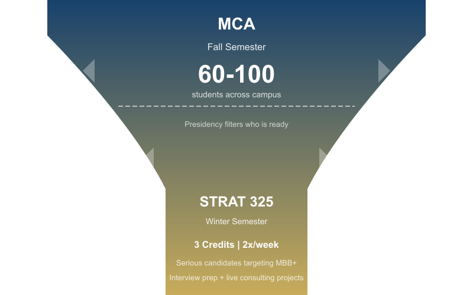

MCA (Fall)
Top of funnel
Recruiting students across campus: freshmen, sophomores, juniors
Intro to consulting, networking events, case workshops
2 paid co-presidents + unpaid VPs run the club
60-100 active members attending regularly

STRAT 325 (Winter)
Serious candidates
Students with a real shot at consulting: MBB and beyond
3-credit class, meets 2x per week
Focused interview prep + live consulting projects
The Consultant's OS framework